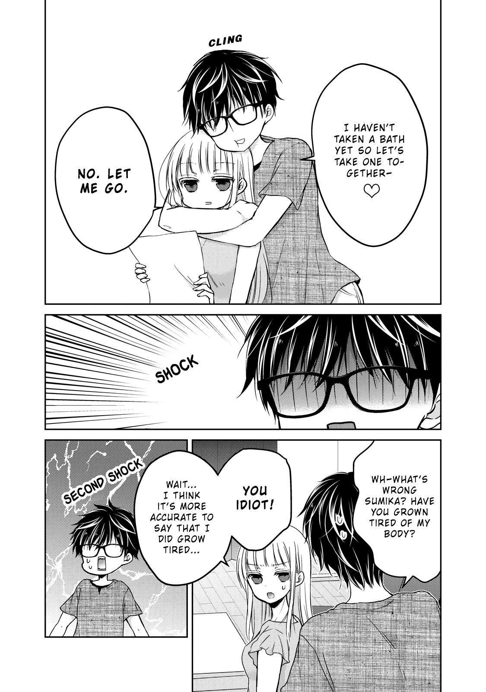

HOME
MANGA
ARCHIVES – SHOW GENRES
ARCHIVES – HIDE GENRES
Sign in
Sign up
HOME
MANGA
ARCHIVES – SHOW GENRES
ARCHIVES – HIDE GENRES
Romance
Comedy
Shoujo
Drama
School Life
Shounen
Action
MORE
Adult
Adventure
Anime
Comic
Cooking
Doujinshi
Ecchi
Fantasy
Gender Bender
Harem
Historical
Horror
Josei
Live action
Manga
Manhua
Manhwa
Martial Arts
Mature
Mecha
Mystery
One shot
Psychological
Sci-fi
Seinen
Shoujo Ai
Shounen Ai
Slice of Life
Smut
Soft Yaoi
Soft Yuri
Sports
Tragedy
Supernatural
Webtoon
Yaoi
Yuri
1/19
2/19
3/19
4/19
5/19
6/19
7/19
8/19
9/19
10/19
11/19
12/19
13/19
14/19
15/19
16/19
17/19
18/19
19/19
Prev
Next
We May Be an Inexperienced Couple but... - Ch. 32 - The Other Side Of The First Night
Home
We May Be an Inexperienced Couple but...
Ch. 32 - The Other Side Of The First Night
1/19
2/19
3/19
4/19
5/19
6/19
7/19
8/19
9/19
10/19
11/19
12/19
13/19
14/19
15/19
16/19
17/19
18/19
19/19
Prev
Next

View Full Size Image
MANGA DISCUSSION
Please enable JavaScript to view the
comments powered by Disqus.